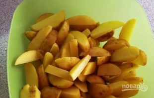
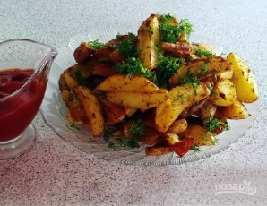

Рецепт печеной картошки
Состав/Ингридиениты
Картофель 1кг.
Масло растительное 3-4ст.ложки
Соль по вкусу
Зелень по вкусу
Пряности по вкусу
Приготовление

Картофель вымойте, очистите щеткой от грязи и песка.
Затем разрежьте на небольшие дольки и промойте еще раз. Обсушите бумажными полотенцами.
Если картофель молодой, то вы можете его не очищать от кожуры.
Затем разрежьте на небольшие дольки и промойте еще раз. Обсушите бумажными полотенцами.
Если картофель молодой, то вы можете его не очищать от кожуры.
Положите картошку в миску, посыпьте специями и солью.
Можно использовать уже готовые приправы для картофеля, которые продаются в магазине.
Добавьте к клубням растительное масло и хорошенько все перемешайте.
Можно использовать уже готовые приправы для картофеля, которые продаются в магазине.
Добавьте к клубням растительное масло и хорошенько все перемешайте.
Выложите картофель на противень и разровняйте по всей поверхности.
Разогрейте духовку до ста восьмидесяти градусов и запекайте в ней картофель тридцать-сорок минут.
Разогрейте духовку до ста восьмидесяти градусов и запекайте в ней картофель тридцать-сорок минут.

Подавайте картофель горячим, посыпав
рубленной зеленью. Приятного аппетита!
рубленной зеленью. Приятного аппетита!